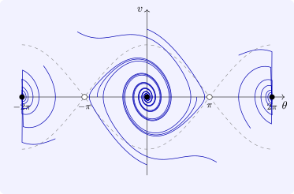

11.2 Limit sets and LaSalle’s invariance principle
For mechanical systems with friction, the energy satisfies only \(\dot V \leq 0\): it is constant whenever the velocity is momentarily zero. Lyapunov’s theorem then gives stability but not asymptotic stability, although friction plainly brings the system to rest. LaSalle’s principle closes this gap.
Definition 11.2.1. The \(\omega \)-limit set of \(x_0\) is \(\omega (x_0) = \{y : \phi _{t_k}(x_0) \to y \text { for some sequence } t_k \to \infty \}\).
Lemma 11.2.2. If the forward orbit of \(x_0\) lies in a compact set \(K \subset U\), then \(\omega (x_0)\) is non-empty, compact, connected and invariant, and \(\operatorname {dist}(\phi _t(x_0), \omega (x_0)) \to 0\) as \(t \to \infty \).
Proof. Non-empty: any sequence \(\phi _k(x_0)\) in the compact \(K\) has a convergent subsequence. Compact: \(\omega (x_0) = \bigcap _{s\geq 0}\overline {\{\phi _t(x_0) : t \geq s\}}\), an intersection of compact sets. Invariant: if \(\phi _{t_k}(x_0) \to y\), then by continuity of the flow \(\phi _{t_k + t}(x_0) = \phi _t(\phi _{t_k}(x_0)) \to \phi _t(y)\), so \(\phi _t(y) \in \omega (x_0)\). Approach: if the distance did not tend to \(0\), a sequence \(\phi _{t_k}(x_0)\) would stay a fixed distance away from \(\omega (x_0)\), and a convergent subsequence would have its limit in \(\omega (x_0)\), a contradiction. Connectedness follows from approach, since a limit set split into two separated closed parts could not be approached by one continuous curve visiting both infinitely often. □
Theorem 11.2.3 (LaSalle). Let \(K \subset U\) be compact and positively invariant, and \(V\) a \(C^1\) function with \(\dot V \leq 0\) on \(K\). Let \(E = \{x \in K : \dot V(x) = 0\}\) and \(M\) the largest invariant subset of \(E\). Then every solution starting in \(K\) approaches \(M\) as \(t \to \infty \).
Proof. For \(x_0 \in K\), \(V(\phi _t(x_0))\) is non-increasing and bounded below on the compact \(K\), so it tends to a limit \(c\). If \(y \in \omega (x_0)\), then \(V(y) = \lim V(\phi _{t_k}(x_0)) = c\), so \(V = c\) on \(\omega (x_0)\). Since \(\omega (x_0)\) is invariant (Lemma 11.2.2), \(V(\phi _t(y)) = c\) for every \(t\), so \(\dot V(y) = 0\): \(\omega (x_0) \subseteq E\). Being invariant, it lies in \(M\). By the lemma, \(\phi _t(x_0)\) approaches \(\omega (x_0) \subseteq M\). □
LaSalle’s theorem does not require \(V\) to be positive definite, which makes it applicable to convergence questions beyond stability: it is the tool used to prove that adaptive control and gradient algorithms converge. Its most common use is the following.
Example 11.2.4. For the damped pendulum \(\theta ' = v\), \(v' = -bv - \sin \theta \), \(b > 0\), the energy \(E = \frac 12v^2 + 1 - \cos \theta \) has \(\dot E = v(-bv - \sin \theta ) + v\sin \theta = -bv^2 \leq 0\). Take \(K\) a sublevel set \(\{E \leq c\}\) with \(c < 2\) around the equilibrium \((0, 0)\), which is compact and, since \(E\) cannot increase, positively invariant. Then \(\dot E = 0\) only on \(v = 0\), and an invariant subset of \(\{v = 0\}\) needs \(v' = -\sin \theta = 0\), so in \(K\) it is just the equilibrium. By LaSalle, every solution starting in \(K\) tends to \((0, 0)\): the pendulum comes to rest, hanging down (Figure 15). Lyapunov’s theorem alone, with \(\dot E\) only semi-definite, would have given only stability.

Questions on this section
Stuck on something here? Ask below and it stays attached to this topic.